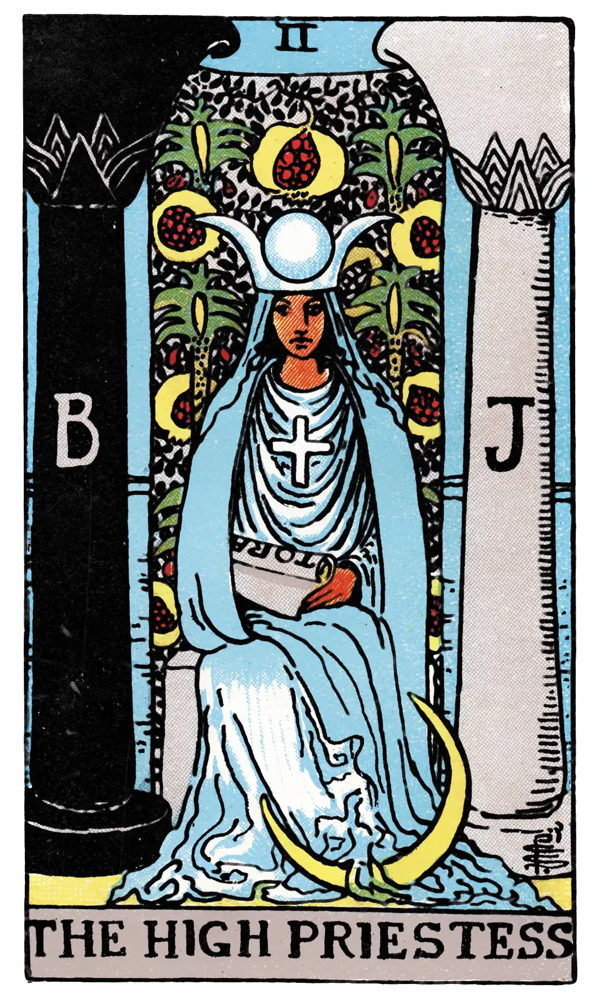

The High Priestess

A.E.W.
Upright
Secrets, mystery, the future as yet unrevealed; the woman who interests the Querent, if male; the Querent herself, if female; silence, tenacity; mystery, wisdom, science.
Reversed
Passion, moral or physical ardour, conceit, surface knowledge.
S.L.M.M.
Upright
Science, Wisdom, Knowledge, Education
Reversed
Conceit, Ignorance, Unskilfulness, Superficial Knowledge.
Description
She has the lunar crescent at her feet, a horned diadem on her head, with a globe in the middle place, and a large solar cross on her breast. The scroll in her hands is inscribed with the word Tora, signifying the Greater Law, the Secret Law and the second sense of the Word. It is partly covered by her mantle, to shew that some things are implied and some spoken. She is seated between the white and black pillars--J. and B.--of the mystic Temple, and the veil of the Temple is behind her: it is embroidered with palms and pomegranates. The vestments are flowing and gauzy, and the mantle suggests light--a shimmering radiance. She has been called occult Science on the threshold of the Sanctuary of Isis, but she is really the Secret Church, the House which is of God and man. She represents also the Second Marriage of the Prince who is no longer of this world; she is the spiritual Bride and Mother, the daughter of the stars and the Higher Garden of Eden. She is, in fine, the Queen of the borrowed light, but this is the light of all. She is the Moon nourished by the milk of the Supernal Mother.
In a manner, she is also the Supernal Mother herself--that is to say, she is the bright reflection. It is in this sense of reflection that her truest and highest name in bolism is Shekinah--the co-habiting glory. According to Kabalism, there is a Shekinah both above and below. In the superior world it is called Binah, the Supernal Understanding which reflects to the emanations that are beneath. In the lower world it is MaIkuth--that world being, for this purpose, understood as a blessed Kingdom that with which it is made blessed being the Indwelling Glory. Mystically speaking, the Shekinah is the Spiritual Bride of the just man, and when he reads the Law she gives the Divine meaning. There are some respects in which this card is the highest and holiest of the Greater Arcana.
Additionally
The High Priestess, the Pope Joan, or Female Pontiff; early expositors have sought to term this card the Mother, or Pope's Wife, which is opposed to the symbolism. It is sometimes held to represent the Divine Law and the Gnosis, in which case the Priestess corresponds to the idea of the Shekinah. She is the Secret Tradition and the higher sense of the instituted Mysteries.